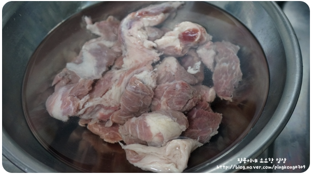
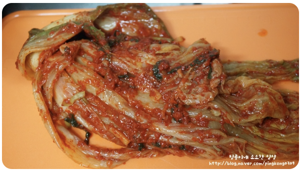

- 돼지고기는 핏물을 빼주세요. 
-
잘익은 김치 한포기를 꺼내서 잘라주세요.
친정엄마표 김치라 너무 맛있답니다.  -
냄비에 들기름 적당히 두르고 김치를 넣고 볶아주세요.

- 다진마늘 한스푼, 설탕 한스푼 넣어주세요.

-
종이컵으로 물 8컵 부어서 센불에 끓여주세요.

-
핏물 뺀 돼지고기를 넣어주세요.

-
고기잡내 제거를 위해 된장을 반 스푼 넣어주세요.

-
양파 반개, 청양고추 한개를 썰어서 넣어주세요.

-
간장 두스푼반,

-
새우젓 두스푼,

-
고춧가루 두스푼반 넣어주세요.

-
돼지고기 김치찌개는 오래 끓여야 더 맛있습니다.
중불로 줄여서 오래 끓여주세요.
-
마지막에 파 썰어서 마무리합니다.